Differentiable physics, SH: a convex library of shared daily shapes
In this experiment a library of shared daily shapes could not be shown to work: the test that
checks whether the method can find a library that we plant failed, so the verdict is
inconclusive. A Primary substation is the last electricity substation before the feeders that
serve homes and businesses, and its daily profile is the average shape of its demand through the
day, separately for weekdays, Saturdays, Sundays, and bank holidays. The library describes each
substation's profile as a mix of three shared shapes plus a small substation-specific correction
(the deviation). The test, called the known-answer gate, failed on 7 of its 10 lines. In the gate,
with five Primaries and this noise, the fitted shapes changed with the starting point and the
forecast score could not tell 2 shapes from 6.
Scores below are the quantile score (twice the mean pinball loss over 11 quantiles, in points of capacity, where 1 point is 1% of a series' capacity; lower is better), on the 12 months after a cut, and "scored year" is 2025-07 to 2026-06. In the scored year the library scored 0.001 points better than the fleet-mean model of experiment 109, which pulls every substation's profile towards one shared profile (98.33% interval −0.005 to +0.002), and 0.030 points worse than one profile per substation (interval +0.009 to +0.056). Most of the loss to the per-site profile came in winter: 0.068 points worse from November to March (interval +0.041 to +0.099). The library did not find the Economy 7 step as a shape of its own. Economy 7 is a tariff that switches night-time storage heating on at a fixed time, and the step is the jump in demand that follows at about 01:00. On cold winter nights the library's forecast reproduced between a tenth and a half of that step. Experiment 121's hand-built night-step arms are the comparison for a better route to the step.
We asked whether the Primary substations fall into a few kinds, so that each profile can be a mix of a few shared daily shapes instead of a pull towards one fleet-mean profile (the method is a non-negative matrix factorisation fitted by alternating constrained least squares, inside the convex demand model of experiment 109). We fitted 3 shapes (chosen on 2023-24 from 3 or 4) to five Primaries (D5, D10, D11, D14, and D16) on the two years before each of three cuts (2023-07-01, 2024-07-01, and 2025-07-01), and scored the 12 months after the last two. Before the scored fits, the gate asked whether the method recovers a library that we plant in synthetic substations with the real weather and noise; the gate failed. Afterwards we looked for the Economy 7 night step, which matters most to the network operator's trust in the forecast, in the shapes and in the forecasts.
Figures
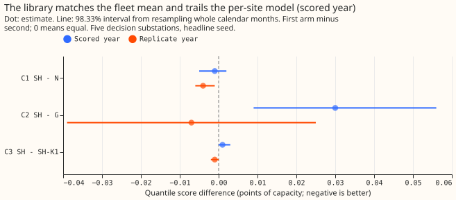
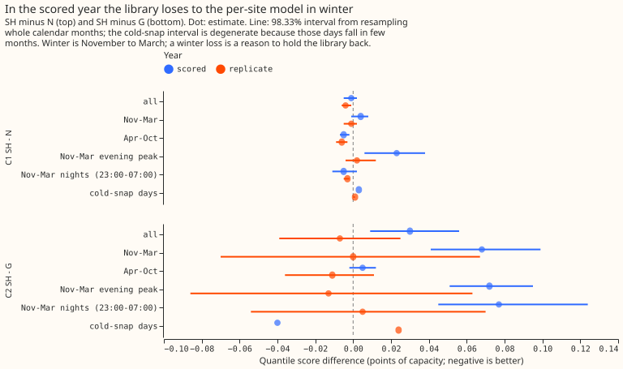
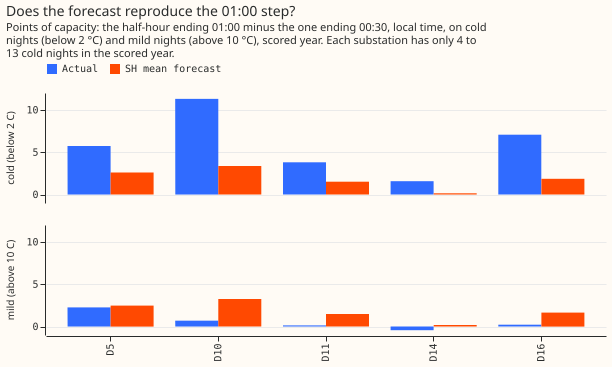
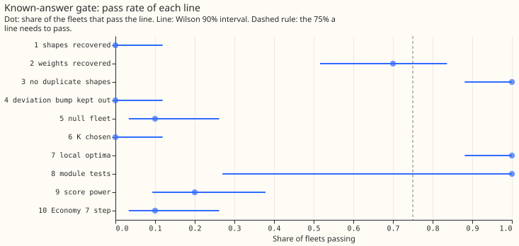
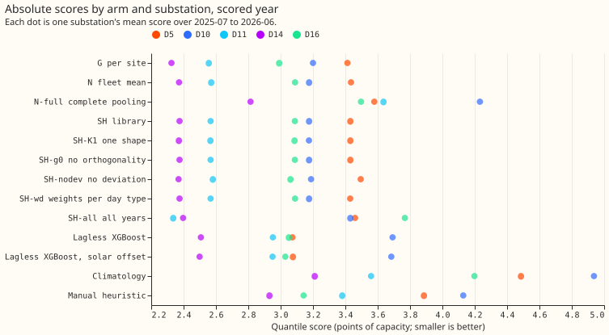
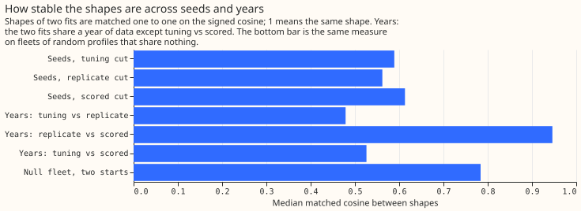
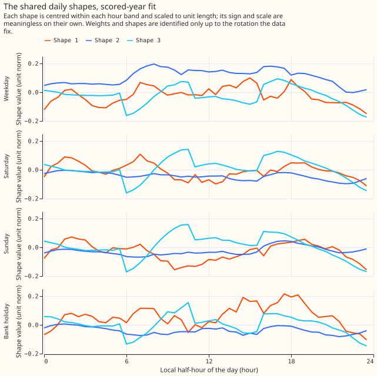
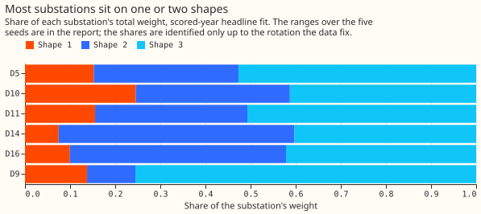
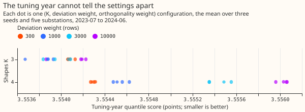
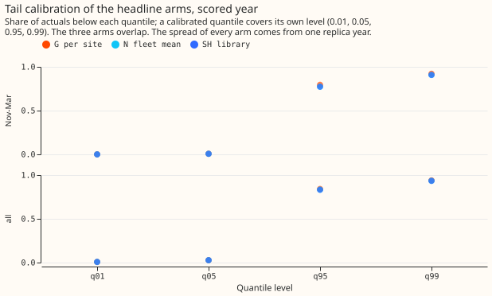
Results
- Arms. G is the per-site convex model, N the fleet-mean model (deviation penalty 3,000 rows), N-full complete pooling, SH the library (K = 3, deviation weight 1,000 rows, orthogonality weight 10 times the shape's data curvature, 5 seeds, headline seed the lowest training objective), SH-K1 one shape, SH-g0 no orthogonality penalty, SH-nodev no deviation, SH-wd weights per day type, and SH-all all years. Capacity is pinned as in experiment 109, there is no drift, and the lockdown and the 66 hand-filtered transfers are out. Rows are the 12 months after each cut, outside the hand-filtered switching masks, at the day-ahead lead. Weather is ERA5 and CAMS (estimates of past weather), so every arm is flattered alike.
- Schedule. One frozen fit per cut and seed, no refits (the screening tier); intervals resample
whole calendar months of stored predictions, paired across arms. The scored fits ran on the module
version recorded as
library_module_blobinwork/fit_run_replicate_scored_tuning.json. The Opus module review has not yet happened, so a later change to the module is not reflected here. - C1, SH minus N. −0.001 points (98.33% interval −0.005 to +0.002) in the scored year, 4 of 5 substations better; −0.004 (−0.006 to −0.001) in the replicate year. The 0.05 smallest gain worth porting is far outside both intervals.
- C2, SH minus G. +0.030 (+0.009 to +0.056) in the scored year, 1 of 5 substations better, so SH is worse than the per-site profile and the interval reaches the 0.05 margin; −0.007 (−0.039 to +0.025) in the replicate year. Leaving any one site out leaves C2 positive in the scored year (+0.013 without D16 to +0.044 without D10).
- C3, SH minus SH-K1. +0.001 (−0.000 to +0.003) scored, −0.001 (−0.002 to +0.000) replicate: more than one shape adds nothing measurable.
- Absolute scores, scored year, five sites (points of capacity). G 2.884, SH-K1 2.912, SH 2.914, N 2.915, SH-nodev 2.924, lagless XGBoost with solar offset 3.048, SH-all 3.063, manual heuristic 3.488, N-full 3.553, climatology 4.068. Replicate year: SH-all 3.053, SH 3.159, N 3.163, G 3.166, lagless XGBoost 3.199, manual heuristic 3.839, climatology 3.910.
- Exploratory (95%). SH minus N-full −0.640 (−0.982 to −0.387): complete pooling is clearly worse. SH minus SH-g0 0.000 and SH-wd minus SH 0.000: the orthogonality penalty and per-day-type weights change nothing. SH minus SH-nodev −0.011 (−0.022 to +0.002). SH minus lagless XGBoost −0.135 (−0.375 to +0.082). SH-all minus SH +0.149 (−0.070 to +0.325) in the scored year and −0.106 (−0.366 to +0.110) in the replicate year.
- Winter first. November to March, scored year: SH minus N +0.004 (−0.001 to +0.008), and +0.023 (+0.006 to +0.038) in the evening peak (16:00 to 20:00); SH minus G +0.068 (+0.041 to +0.099), and +0.077 (+0.045 to +0.124) on winter nights (23:00 to 07:00). In the replicate year the point estimates of the winter contrasts against N and G are within ±0.013 of zero (cold-snap rows excluded), with intervals of about ±0.07 against G. The scored-year winter loss to G is a reason to hold the library back whatever the annual mean does. The evidence holds 2 independent winters (2024-25 and 2025-26); the tuning winter chose the settings. A cold-snap day has a mean 6-hour-smoothed ERA5 temperature below 0 °C at the site: 20 site-days in the scored year and 25 in the replicate year, and the intervals on those rows are degenerate because the days fall in few months.
- Tails. SH matches N at q01, q05, q95, and q99 within 0.002 coverage in every year and season. In the scored year q95 coverage was 83% (all rows) and 77% (November to March) for SH, and 73% for N-full in winter, so the upper tail is too low in winter. The residual spread of every arm comes from one earlier year of fits (the replica fit), which is a known weak point.
The Economy 7 step and the shapes
- No shape of the library is a night step. The rise at 00:30 (the half-hour that ends at 01:00) is 0.061, 0.011, and −0.006 per unit length for the 3 shapes, and the fitted profiles rise there by 0.3 to 3.3 points. Each shape carries weight from 5 to 7 substations of the fit (the five and the two others in the pool); no shape belongs to a group of substations.
- The forecast under-reproduces the step on cold winter nights and invents one on mild nights. On cold nights (below 2 °C) in the replicate year (23 to 26 nights per substation) the actual step at 01:00 was 6.9, 9.0, 3.2, 1.2, and 6.9 points at D5, D10, D11, D14, and D16, against forecast steps of 2.6, 3.1, 1.5, 0.4, and 1.5. The scored year (4 to 13 cold nights per substation, so few) gives the same picture: 5.7, 11.3, 3.8, 1.6, and 7.1 against 2.6, 3.4, 1.5, 0.1, and 1.9. On mild nights (above 10 °C) the forecast step is 1.4 to 3.3 points at D5, D10, D11, and D16 against actual steps of −0.3 to 2.3. A visible miss on cold winter nights counts against release; the card for each substation shows the median cold night.
- The step is UTC-fixed. On cold nights (below 6 °C) the largest rise ends at 01:00 UTC in British Summer Time and in Greenwich Mean Time at 9 of 10 substation-years (the exception, D14 in the replicate year, has the smallest step), with 16 to 27 British Summer Time nights each. A local-clock step would rise an hour earlier in UTC in summer.
- The window and the weight by winter cannot be read. The profiles fall back at 06:00 and 11:00 local time and rise at 06:30 to 08:00, which does not show a seven-hour window ending near 07:30, and the shapes of different cuts do not match (matched cosine 0.48 between the tuning and replicate fits, 0.53 between the disjoint tuning and scored fits), so a weight on the shape with the largest rise at 00:30 by winter is "cannot tell".
- The two-clock regression is uninformative. The three windows overlap by 5 of 7 hours, and the coefficients (local window 1.8 to 4.5 points, UTC window −1.1 to +1.1) do not agree with the onset readout, so the onset readout is the readout to trust. The learned shapes are indexed by local time only, so a UTC-indexed shape family and a heating-dependent shape (a winter and a summer version of each) are not tested here.
Stability and shape mix
- Across seeds, the matched shapes agree at a median cosine of 0.59 (tuning cut), 0.56 (replicate), and 0.61 (scored), minimum cosine 0.19 to 0.24. The plan calls under 0.6 unstable; the null fleet of random profiles gives 0.78, so the real shapes are less stable than shapes fitted to profiles that share nothing.
- Across years, the replicate and scored fits agree at 0.95 (their windows share a year), and the disjoint tuning and scored fits at 0.53.
- Shape mix. Each of the five substations puts 7% to 53% of its weight on each shape, so none sits wholly on one shape, and the deviation holds 0.7% to 2.3% of the profile's energy. The range over the 5 seeds is wide (for example 0.24 to 0.88 for D10 on shape 1), so the shares are not identified. The plan's month-block intervals on the shares were not computed, because each needs a refit per resample; the range over seeds stands in, as a labelled departure.
Known-answer gate
Twenty fleets per kind (the plan's cut order: 20 instead of 40, pass at 15 instead of 30, the same 75%). Each fleet has 5 synthetic substations on the real weather and pinned capacity of the tuning cut, a 3-shape library, and block-resampled noise from the per-site model's residuals before the cut.
- Passed: no duplicate shapes (line 3: 20 of 20, largest pairwise |cosine| 0.0002 at the tuned penalty against 0.43 without it), local optima (line 7: 20 of 20), and the module tests (line 8).
- Failed: shapes recovered at cosine 0.9 (line 1: 0 of 20; median of the worst shape 0.77), weights (line 2: 14 of 20, below 15), a deviation absent from every shape, tested with one evening bump at one substation (line 4: 0 of 20), K chosen (line 6: 0 of 20, the tie rule gave K = 2 every time), null fleet (line 5: 2 of 20), score power (line 9: 4 of 20; at an oracle gain of 0.084 SH minus N had a median of −0.026), and the Economy 7 step (line 10: 2 of 20; time and size were found in every fleet, but the placebo step, the difference between two fits that differ only in noise, had a median of 1.4 points against a limit of 25% of the 4-point step, which is 1.0). The dense weight prior (reported, not blocking) gave a median worst cosine of 0.33.
- What the failure means. In the gate, with five substations, 3 shapes, and this noise, the shapes were recovered only up to a rotation that does not change the score, so every number on shapes and shares in this page is descriptive. No run here used more than five substations, so the cause is a hypothesis, not a finding.
Checks
- Median minus mean forecast is 0.000 points at every substation and arm, because the spread is median-centred.
- Mean-error contrasts point the same way as the quantile-score contrasts (C1 −0.003, C2 +0.033, C3 +0.001 in the scored year).
- Reproduction of experiment 109: G and N scored 2.884 and 2.915 (scored year) and 3.166 and 3.163 (replicate), identical to the stored sets.
- Audit triggers fired: trigger 1 (a gate line failed; the reproduction of experiment 109's G and N, the other part of trigger 1, passed) and trigger 6 (C1's interval is 0.007 wide, under the 0.022 floor, because SH and N are nearly the same model). Triggers 2 to 5 and 7 did not fire. No Opus audit has run; the merge is held pending the maintainer's decision.
Predictions against outcome
- K from 3 or 4, within 0.023 of K = 2 and 6: held (every K from 2 to 6 within 0.003 of 3.554).
- C1 −0.01 to −0.04, 3 or 4 of 5 sites better: missed on size (−0.001), 4 of 5 better. C2 −0.02 to +0.03: at the top of the range (+0.030). C3 −0.01 to −0.04: missed (+0.001).
- Seeds stable at 0.9 or more, disjoint years 0.7 to 0.9, null under 0.6: all three missed (0.56 to 0.61, 0.53, 0.78).
- Most substations 70% or more on one shape, deviation under 20%: the second held (under 3%), the first missed. SH-g0 has a pair of shapes above 0.7 and SH does not: missed (0.43 without the penalty).
- q95 and q99 coverage within 3 points of N: held.
Caveats and post hoc labels
- Post hoc. Gate line 10 was missing from the first printed report (a replacement that did not match), and the module tests failed there only because they ran from the wrong folder; both were fixed before reading any line as a decision, and the bars were not changed. Three readouts were fixed after a first look because of code faults: minutes of the day overflowed an 8-bit hour (the night clock and step tables), the night-rise table averaged different nights at each half-hour, and the step slot was first set one half-hour late. No bar or contrast changed.
- Screening tier on one year per cut, with ERA5 and CAMS weather. The late vintage at the tuning cut and the single replica year behind the spread are known weak points.
- A library fit with K above the pool size fails (K = 6 with 5 substations gave a singular weights step in one tuning seed and in some gate fleets); those fits are reported as failed.
What the next experiment should answer
- Does a library find shared shapes when many substations share them? The options are the eight Primaries that report apparent power and the wider fleet, where a night step shared by a group of substations could show up as a shape, with the same gate; the choice is the maintainer's.
- Does a heating-dependent night-step term close the cold-night miss? The hand-built arms of experiment 121 are the benchmark. Shape arms that depend on heating and on UTC time need a module change first.
Substation cards
Provisional: fitted to past weather on a screening run. One card per decision substation (D5, D10, D11, D14, D16) from the 2025-07-01 headline fit: the daily profile per day type (library and deviation drawn separately), the weights on the shapes, the heating response, the holiday effects, the weight on the step shape by winter ("cannot tell" where the shapes do not match), four example weeks fixed by calendar rule before any score was read (the first Monday on or after 15 July 2025, 15 October 2025, 15 January 2026, and 15 April 2026, with 80% and 90% bands for SH and the median of N), and the median cold winter night (a night from 23:00 to 07:00 local time, November to March, mean temperature below 2 °C, 4 to 17 nights per substation under this whole-night rule, which differs from the per-row rule of the step figure) against the forecast medians of SH, N, and G. The pinned capacity is the real-time vintage, not a measurement, and weights and shapes are identified only up to the rotation the data fix. The per-site model with recent-level assimilation (GAM-K) is outside this experiment, so G stands in as the per-site reference on the cold-night panel.
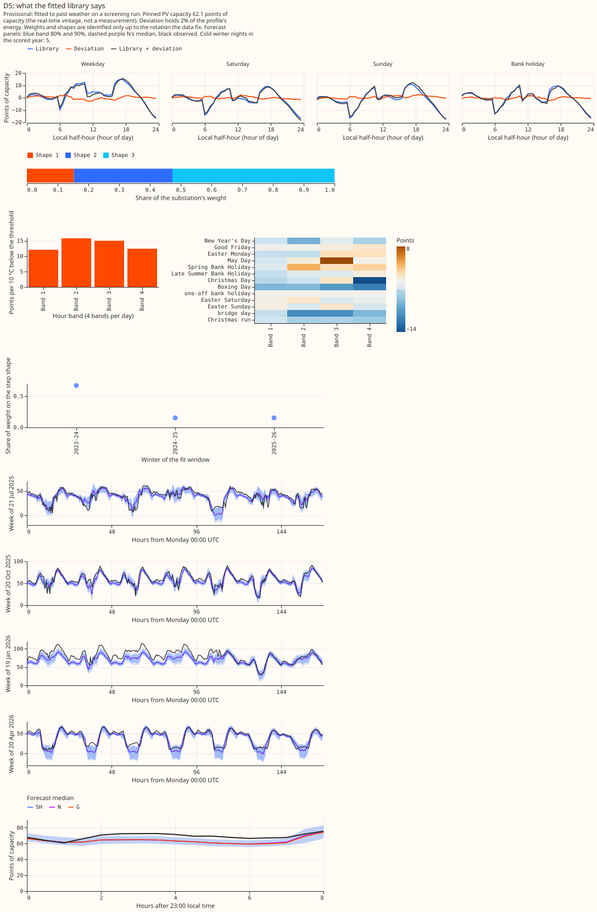
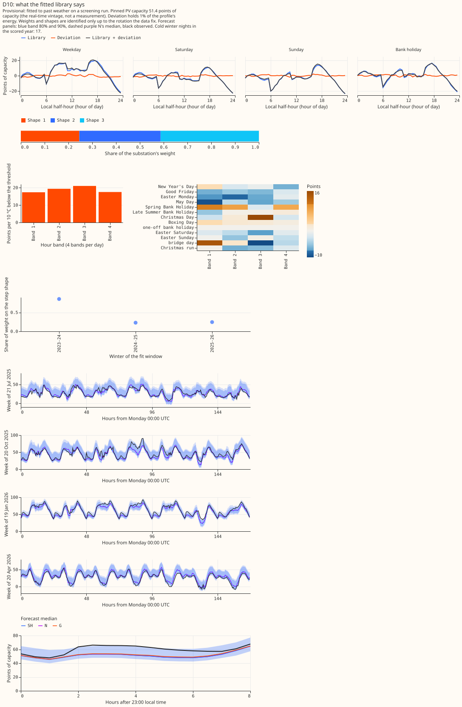
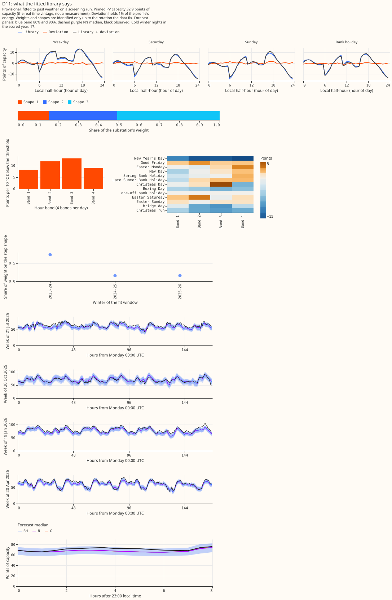
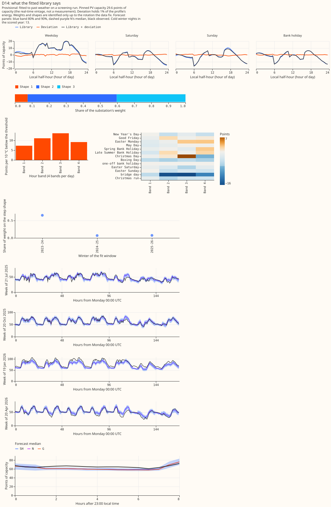
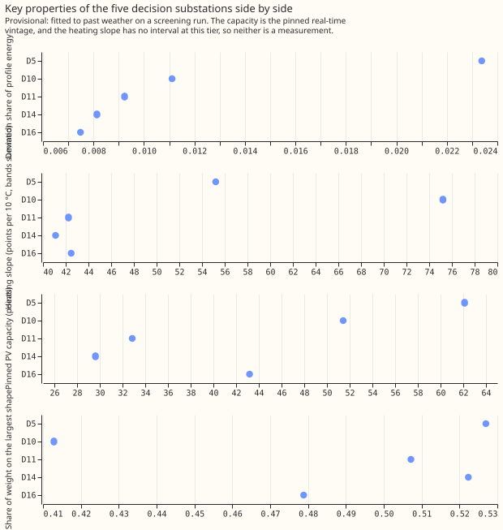